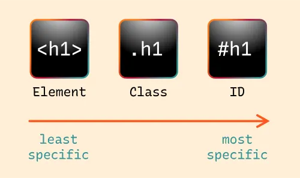

File paths & selector tools
FILE PATH

- Relative path
- Absolute path
Relative path
which start it's path with current location.
Absolute path
which start it's path from system's root file.
NOTE**
browser doesn't allow absolute path as it reveals our system's data
Selectors


- ID
- It can only be used once.
- It's been used for styling any element
- CLASS
- It can be shared among elements which can be grouped together for styling and other properties.
- DIV
- It's a container used for containing some piece of code which can be styled same.
üè† Back to Home |
⬅️ Prev Topic |
➡️ Next Topic